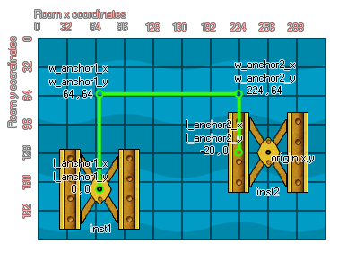

physics_joint_pulley_create(inst1, inst2, w_anchor1_x, w_anchor1_y, w_anchor2_x, w_anchor2_y, l_anchor1_x, l_anchor1_y, l_anchor2_x, l_anchor2_y, ratio, max_len1, max_len2, col)
| Argumento | Descripción |
|---|---|
| inst1 | La primera instancia para conectarse con la articulación |
| inst2 | La segunda instancia para conectarse con la articulación |
| w_anchor1_x | La coordenada x donde está anclada la primera parte de la articulación, dentro del mundo del juego |
| w_anchor1_y | La coordenada y donde está anclada la primera parte de la unión, dentro del mundo del juego |
| w_anchor2_x | La coordenada x donde está anclada la segunda parte de la unión, dentro del mundo del juego |
| w_anchor2_y | La coordenada y donde está anclada la segunda parte de la unión, dentro del mundo del juego |
| l_anchor1_x | La coordenada x local donde la articulación 1 está anclada a la primera instancia |
| l_anchor1_y | La coordenada y local donde la articulación 1 está anclada a la primera instancia |
| l_anchor2_x | La coordenada x local donde la articulación 2 está anclada a la segunda instancia |
| l_anchor2_y | La coordenada y local donde la articulación 2 está anclada a la segunda instancia |
| ratio | Establezca la relación de velocidad entre dos instancias |
| col | Si las dos instancias pueden colisionar (verdadero) o no (falso) |
Devoluciones: índice de la articulación
La articulación de la polea se utiliza para conectar dos instancias dentro del mundo de la física de tal manera que mover uno influirá directamente en el movimiento del otro. Estas articulaciones primero se anclan en el espacio del mundo en dos puntos, cada uno conectado a una instancia en su centro de masa. Esto se puede cambiar estableciendo las coordenadas x / y del anclaje local en relación con el origen de la instancia, lo que significa que la conexión real desde la instancia al punto de anclaje del mundo de la física se puede compensar en algún lugar que no sea su origen. La siguiente imagen ilustra esto:

Si observa inst2, puede ver que su punto de anclaje local se ha desplazado 20 píxeles hacia la "izquierda" de su origen (¡Recuerde! Los puntos de anclaje mundiales se definen utilizando las coordenadas de la sala, mientras que los puntos de anclaje locales se definen con respecto al origen de la instancia). También puede especificar una relación para la articulación de la polea, que indica a un lado u otro que se mueva más rápido, con un valor inferior a 1 haciendo que la primera instancia se mueva más rápido (EG 0.5 lo hará moverse dos veces más rápido) y un valor superior a 1 la segunda instancia se mueve más rápido (EG 2 lo hará moverse dos veces más rápido).
Como con todas las uniones, si configura el valor "col" para true entonces las dos instancias pueden interactuar y colisionar entre sí, pero solo si tienen eventos de colisión, sin embargo, si está configurado para false, no colisionarán sin importar qué.
var t_fix, inst1, inst2;
t_fix = physics_fixture_create();
physics_fixture_set_circle_shape(t_fix, 20);
inst1 = instance_create_layer(150, room_height - 90, "Instances",
obj_Block);
inst2 = instance_create_layer(300, room_height - 90, "Instances",
obj_block);
physics_fixture_bind(t_fix, inst1);
physics_fixture_bind(t_fix, inst2);
physics_joint_pulley_create(inst1, inst2, 150, room_height - 140,
300, room_height - 140, 0, 0, 0, 0, 2, 0);
physics_fixture_delete(t_fix);
El código anterior crea y define un nuevo dispositivo, crea dos instancias de "obj_Block" y luego vincula a este dispositivo dos. A continuación, define una unión de polea entre estas instancias, sin compensación de las articulaciones, una relación de 2: 1 (lo que significa que inst2 se moverá más rápido). No se producen colisiones entre las dos instancias en la polea.